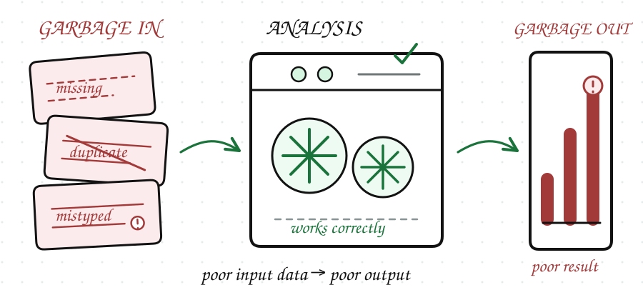
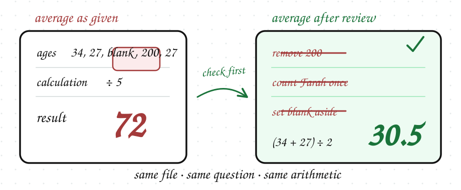

A manager forwards you a customer list and asks for the average age. Two minutes in, you have found three separate reasons the answer would be wrong.
Almost every analysis you will ever run begins with a moment like this. Bad data leads to bad decisions. Even simple analysis can fail if the data is incomplete, incorrect, or inconsistent.
Data quality tells you whether a dataset is fit for the job you need it to do. A decision built on missing, duplicated, or mistyped numbers can look completely logical and still be wrong, because nothing in the reasoning shows the fault.
That is why data professionals spend significant time checking data before analyzing it.

Some of the most common issues include:
None of this is unusual. Expect to find several of them in any dataset you are handed.
You do not need advanced tools to start checking quality. Sometimes a simple review of a table can reveal missing values, strange entries, or duplicate rows.
This is the customer list from the top of the lesson. The manager wants the average age. Read it before going on. There are four problems in it.
Three of the four break the average age, and each one breaks it differently:
Liibaan's age is 200. It is inaccurate, and a single impossible value drags the average up on its own.
Sagal's age is blank. That is incomplete - and you must decide whether she is left out of the average or counted as zero, which give very different answers.
C-102 appears twice, and every value in it is correct. That is the point: nothing in either row is wrong, but Farah is counted as two customers, so his age carries double the weight of anyone else's.
Average the ages exactly as the table gives them and you get 72. Remove the impossible value, count Farah once, and set Sagal's blank aside, and you get 30.5. Same file, same question, same arithmetic, and an answer that would have sent the manager looking for a customer base that does not exist.

The fourth does not touch the average at all. Hargeisa and hargeisa are inconsistent, and it would matter enormously if the question were about cities. But the manager asked about age. Which faults matter depends on the question you were asked.